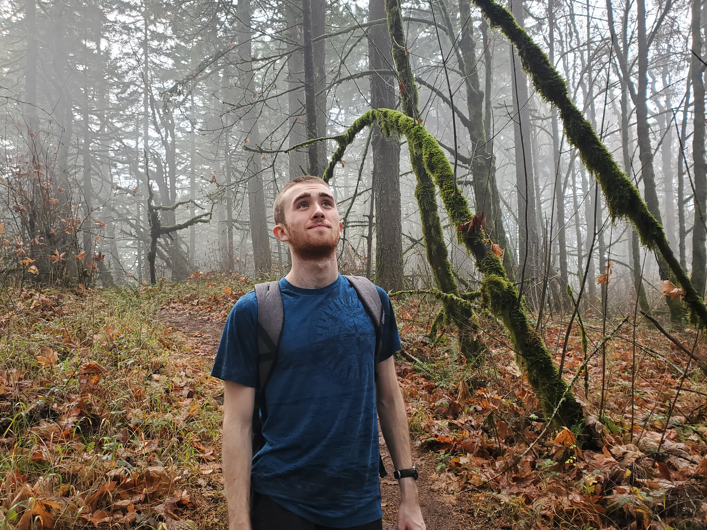

Chase's First HTML page
Answers to Questions
-
My name is Chase Nairn-Howard,
and I usually just go by "Chase."
- Email adress: nairnhoc@oregonstate.edu
- I'm a sophmore majoring in computer science.
- Alas, I've never done anything with web development.
-
I want to learn how to make a basic webpage that
has some images, graphics, animations, and
interactables.
- Yes
-
The most unique experience I've had is most likely
traveling to Europe or doing research in the Mexican
jungle. In Europe, I traveled from Budapest to Vienna
to Germany to France. In Mexico, I camped out in the
jungle and scuba dived in the ocean to observe
wildlife.
Link to code blog
